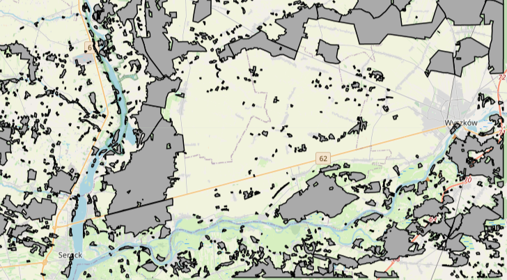
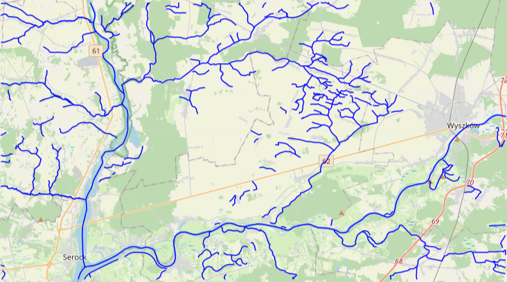
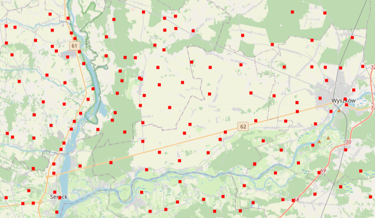
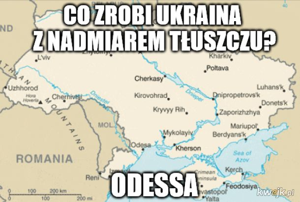

Dane wektorowe
Dane wektorowe to dane przestrzenne opisujące geometryczne właściwości obiektów wektorowych i odnoszące się do formatu wektorowego mapy. Do tworzenia geoportalu zostały wykorzystane obiekty o charakterze punktowym, powierzchniowym i liniowym. Były to odpowiednio osnowa geodezyjna, lasy oraz rzeki występujące na obszarze godła mapy N-34-127-A,B. Nazwa arkusza to Wyszków. Wyszków to miasto w woj. mazowieckim. Siedziba powiatu wyszkowskiego i gminy miejsko-wiejskiej Wyszków. Miasto jest położone nad Bugiem na skraju Międzyrzecza Łomżyńskiego i Doliny Dolnego Bugu, w pobliżu Puszczy Białej i Kamienieckiej, 55 km na północny wschód od Warszawy, przy drodze krajowej nr 8 Warszawa – Białystok. Poniżej przestawiam wybrane dane wektorowe dla tego obszaru.



